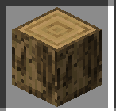

Wood
Wood is one of the most important progression materials in Balanced Never Heard Of It. Unlike vanilla Minecraft, wood is not immediately accessible in its refined form and requires specific tools and processing steps.
In BNHOI, wood represents the transition from primitive survival to structured progression. Gaining reliable access to usable wood usually determines whether a player survives past the first few days.
Rough Wood
The earliest obtainable form of wood is Rough Wood. This variant is produced when logs are harvested using early-tier tools, such as the Copper Hatchet.
Rough Wood cannot be used directly for advanced crafting. Its primary purpose is to act as an intermediate material, reinforcing the idea that raw resources must be processed before they become truly useful.
Note: Rough Wood is intentionally inefficient and exists to slow down early progression and prevent immediate access to full wooden tools.
Progression Role
Wood is required for crafting early workstations, structural blocks, and mechanical components. However, BNHOI restricts how quickly players can convert trees into usable materials.
This design encourages careful planning, tool management, and exploration before committing to large-scale building or automation.